_01.jpg){kind=link}


.jpg){kind=link}


.jpg){kind=link}
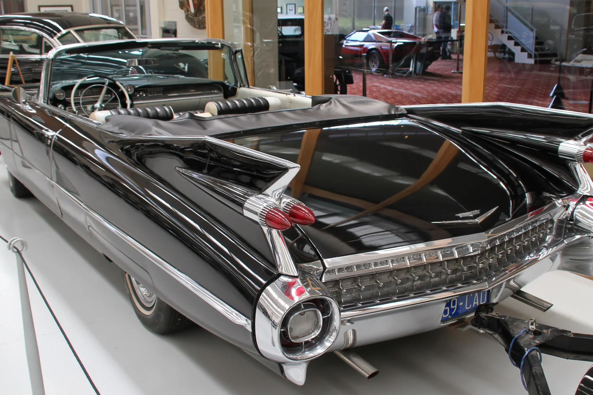
The Car in the Driveway, and Everyone Who Didn't Have One
Remember the family car with tail fins and few seat belts, the paper map, and how people got around without one? A warm look back.
Read the storyON THE ROAD - CARS OF THE 1960s AND 70s
Chrome, vinyl roofs and a tank of leaded gas. Which one was parked in front of your house?
Cars were never just transportation. They were the sound in the driveway at five o'clock, the smell of warm vinyl in July, the name a family said with pride or with a sigh. Some cars were simply everywhere, and catching sight of one today can stop a person mid-stride.
Here are ten cars America could not get enough of, roughly in the order they arrived. Maybe one of them was yours.
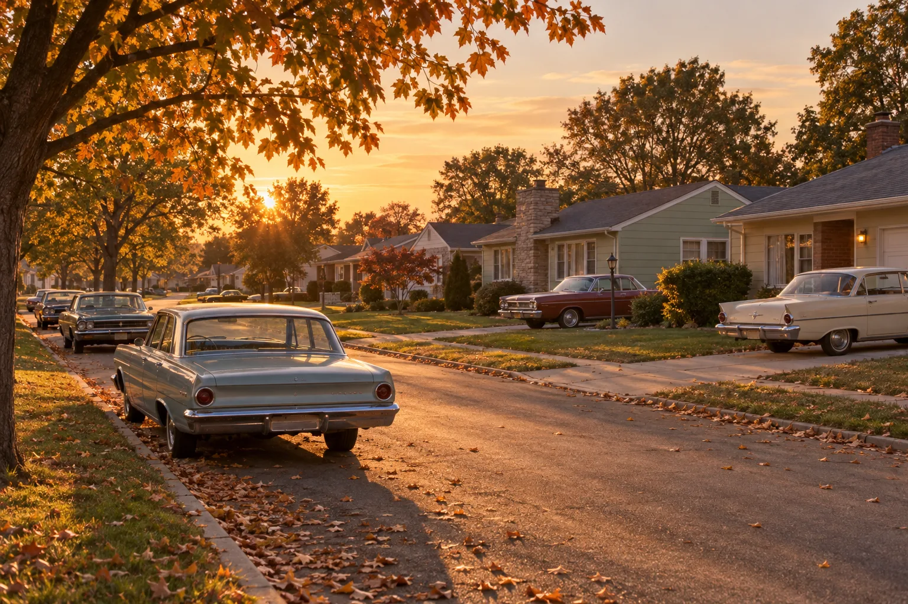
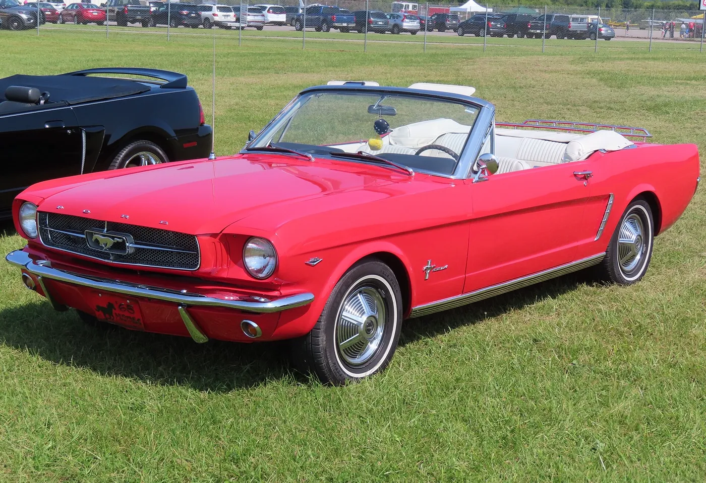
Photo: MercurySable99, CC BY-SA 4.0, via Wikimedia Commons
Ford introduced the Mustang at the New York World's Fair, to the press on April 14, 1964 and to the public on April 17, according to Ford's own company history. The base model started at $2,368. Buyers ordered more than 418,000 in the first year, an industry record at the time, and Ford says more than ten million have been sold since. Maybe you remember the first one on your street, and how the neighbors walked over for a look.
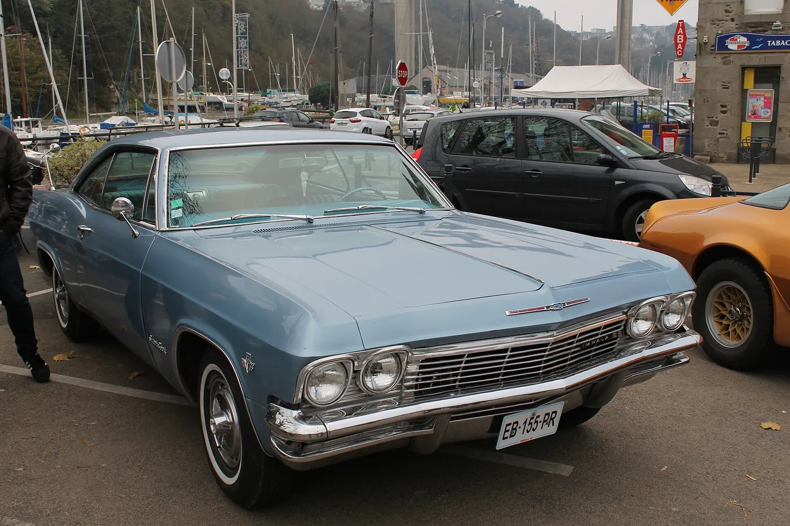
Photo: Kev22, CC BY-SA 4.0, via Wikimedia Commons
In 1965 Chevrolet sold 1,074,925 Impalas and Impala Super Sports, more than any single American model before or since, according to the collector-car marketplace Hemmings. That is a lot of driveways. Maybe yours had the big bench seat, the radio that glowed, and room for whoever needed a ride.
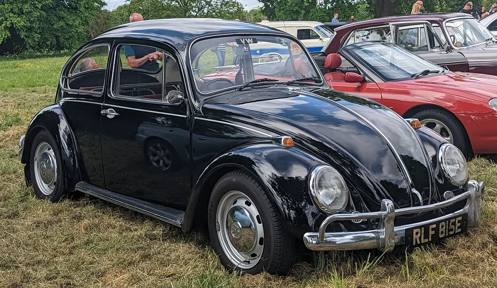
Photo: Calreyn88, CC BY-SA 4.0, via Wikimedia Commons
Small, round and cheap to run, the Beetle was the odd one out, and proud of it. After a famous 1959 advertising campaign, HISTORY.com recounts, Volkswagen became the top-selling car import in America. On February 17, 1972, the 15,007,034th Beetle came off the assembly line, passing the Ford Model T's long-held production record. More than 21 million were built before the last original Beetle was made in 2003.
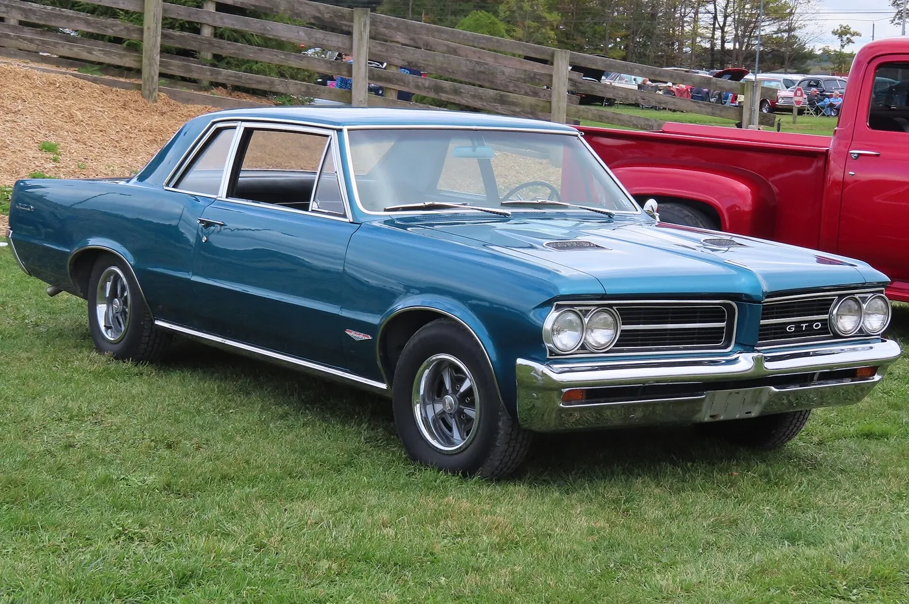
Photo: MercurySable99, CC BY-SA 4.0, via Wikimedia Commons
The collector-car insurer Hagerty credits the 1964 GTO with launching the muscle-car era. It arrived in late 1963 as a $296 option package on the Pontiac Tempest LeMans, pushed through by a young chief engineer named John DeLorean. Pontiac had modest hopes and sold about 32,000 the first year, three times the plan, then around 75,000 in 1965. Maybe you remember what one sounded like at a stoplight.
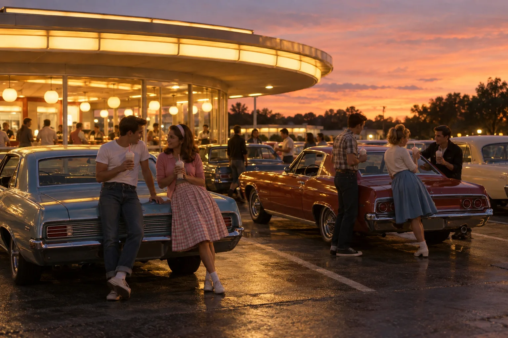
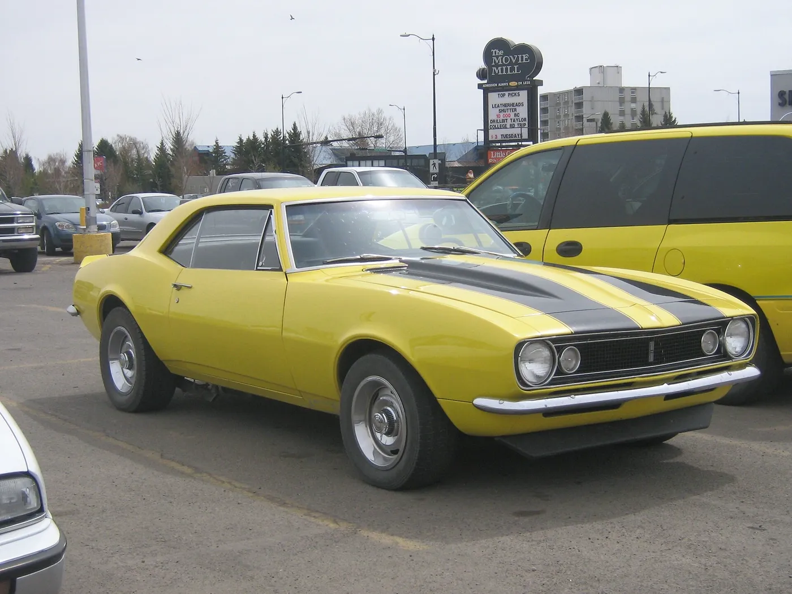
Photo: dave_7, CC BY-SA 2.0, via Wikimedia Commons
Chevrolet's answer to the Mustang was announced on June 28, 1966 and reached showrooms that September as a 1967 model, Hagerty's history says. Around 221,000 were built in that first year. The Mustang kept the sales lead, but the argument over which car was better started in 1967, and in some families it has not ended yet.
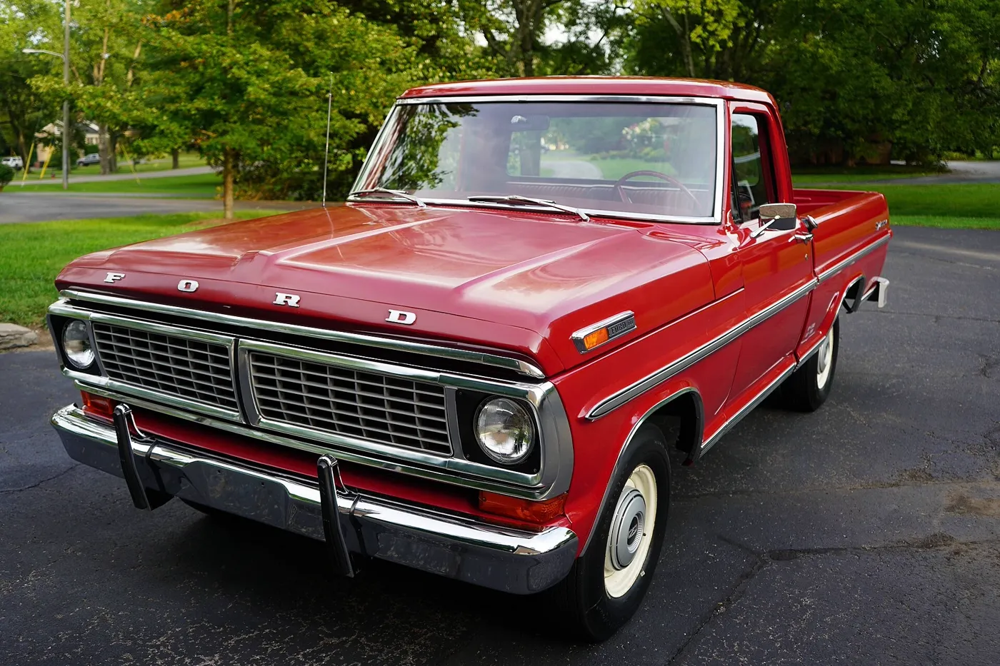
Photo: Don don03, CC BY-SA 4.0, via Wikimedia Commons
Ford says the F-Series has been the best-selling truck in America every year since 1977, with more than 33 million sold in that time. Long before it was a best-seller, it was simply the truck: the one that hauled, towed and idled at the job site. Maybe your family had one with a dent nobody ever bothered to fix.
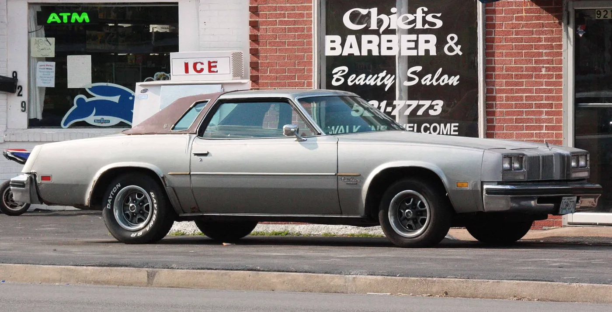
Photo: Ryanandlenny, public domain, via Wikimedia Commons
In 1976 the best-selling car in America was not a Ford or a Chevrolet. It was the Oldsmobile Cutlass, with 495,976 sold, keeping a title it already held, according to sales historian Matt Gasnier's Best Selling Cars Blog. The Cutlass Supreme, with its formal roofline, was the car next door, and the one across the street, and the one at the office. It seemed to be everywhere, because it was.
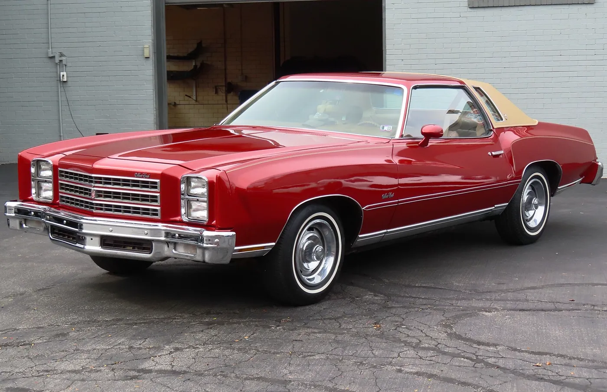
Photo: MercurySable99, CC BY-SA 4.0, via Wikimedia Commons
Right behind the Cutlass in 1976 came the Chevrolet Impala and Caprice at 454,552, the Chevrolet Monte Carlo at 362,171, the Ford LTD at 361,691 and the Chevrolet Malibu at 324,870, the same sales record shows. These were the two-tone, vinyl-roof family cars of the school pickup line and the Sunday visit. Maybe you can still picture the exact shade of brown.
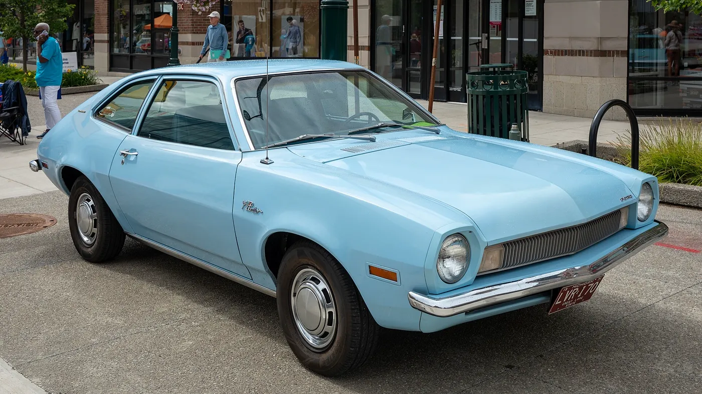
Photo: Mustang Joe, CC0, via Wikimedia Commons
Ford's little Pinto arrived for 1971 and found more than 352,000 buyers in its first year, according to a history in Old Cars Weekly. By 1974, the year of the gas lines, Pinto production passed 544,000, and its wagon was the best-selling station wagon in America. The Pinto's later fuel-tank troubles and a major recall in 1976 are part of its story too. Maybe you learned to drive in one, and parallel parked it on the first try.
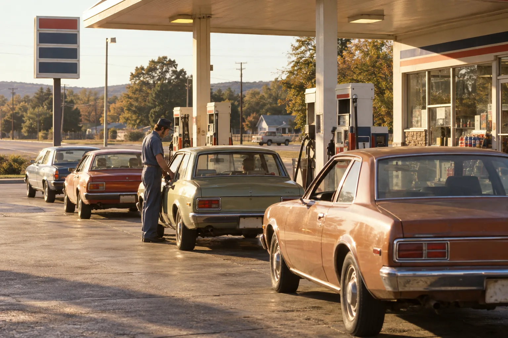
Imported cars took 13.5 percent of the American market by 1970, Old Cars Weekly notes, and after the 1973 oil embargo, drivers moved away from the big thirsty cars in growing numbers. The era of the land yacht was fading, and the small, simple car had its moment. The next decades would belong to names this story has not even mentioned.
So which one was yours? The Mustang a brother saved for, the Beetle an aunt swore by, the Cutlass in every second driveway? Maybe it was none of these, and the car you remember never made any list at all.
Tell someone who remembers. Ask them what was parked in front of their house, and see how long the answer takes.
The street, drive-in and gas station scenes in this article are AI-generated illustrations inspired by the period, not historical photographs. The car photographs show the actual models described and are credited to their photographers.

Remember the family car with tail fins and few seat belts, the paper map, and how people got around without one? A warm look back.
Read the story
Remember the rotary phone? The long cord, the slow dial, the one phone in the house. A warm look back, with a question for you.
Read the story
13 questions. No timer.
Photo: CZmarlin, CC0, via Wikimedia Commons.
Take the quiz← Back to Dear Old Days · All articles · About · Privacy policy · Photo credits
Your turn
Which car was parked in front of your house? Tell someone who remembers, and see how long the answer takes.